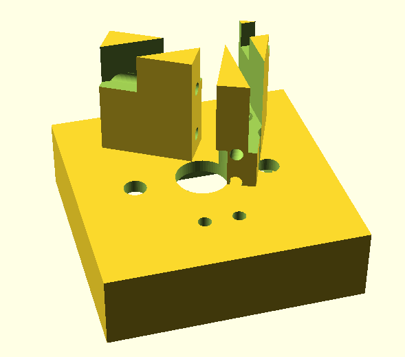
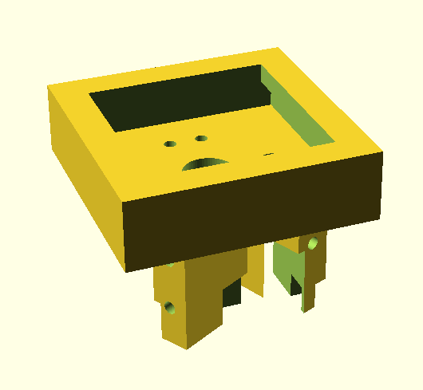

I am a bit of a keyboard nerd. Way back when, I bought and assembled an ergodox kit. Since then I have been glued to the ergonomical mechanical keyboards subreddit. At some point, I looked up and was flying down the slippery slope at full speed with plans to design and build my own endgame keyboard.. it’s going to be beautiful.
My brother and I found a half-price resin printer, which I planned this project around. Resin printers are messy and toxic and create lots of waste, but they are also magical. This printer blows me away with the quality of prints it can create, especially since it is so forgiving to a new print head like me.
3D Modeling Software
I have never used any digital 3d modelling software before, so there was some exploration to do. My brother uses rhino, which unfortunately only runs on Windows and costs more than I was willing to pay for this project.
Instead, I initially decided to use openscad, which is fantastic. This software uses a DSL to construct your models by applying series of operations like extrusions, intersections, and subtractions to a small set of primitive objects. This approach allows you to stick your models into git, and it is straightforward to parametrize your models. Parameterized models are handy for finetuning your print.
Openscad does cache each operation used to create your model. So it is fast to render when you add operations onto the end of the operation chain or adjust operations late in the chain. But if you change anything early in the operation chain, you can tape memes to your coworker’s desks while you wait for larger models to compile.
Buuuut, I have some gripes with openscad. First, I found openscad too slow as my models started to get more complex. Openscad is a single-threaded program with no GPU support; I found this a bit infuriating as I waited for the render to update after every adjustment made early on in the operations stack. The second gripe I have is with the DSL openscad uses. The DSL is a functional language that doesn’t have first-class functions. The third gripe is that it is tough to model things that have curves. This gripe made it too difficult for me to model the keyboard’s enclosure as I wanted. Luckily my Rhino wizard of a brother helped me out and modelled the enclosure. Checkout some of his work here.
Watching Rhino or Solidworks wizards at work is mindblowing; they can manipulate 3d objects faster than I can process what I am even looking at.
After openscad I discovered implicit cad, which can interpret existing openscad code but also allows you to write your models in Haskell. It looks like dreams sometimes really do come true. By the time I found openscad, I had already modelled the key switch sockets in openscad, and my brother had modelled the enclosure. I am still in the process of remodelling the keyboard in implicitcad and maybe printing my new version sometime in the future. Implicitcad has support for multithreading and handles more complex models far faster than openscad. The main limitation for implicitcad is the resolution that you render. Resolutions high enough for the printer take a longer time to generate.
Just the other day, a friend introduced me to solvespace, which looks promising. One of the most complex parts of using openscad and implicitcad is measuring lines and lining up objects. Solvespace gives you a GUI that makes this process much more manageable. Solvespace also saves models as plaintext files, although I am not sure how readable/version control friendly they are. I have yet to give solvespace a go.
Hotswappable Socket Design
 Bottom view of a single switch socket. The diodes and connector wires design is very similar to Jan Lunge’s sockets.  Top view of a single switch socket.
The socket for the switch is the part of the keyboard that I spent the most time on. I wanted to make the switch sockets hot-swappable only using printed parts and wire similar to Jan Lunge’s Cherry MX Hot-Swappable Sockets. This requires getting the cutouts for the switch pin and the wire to push up against each other and make decent contact.
Having used the keyboard for a few days, I have some sticky key issues and sometimes some delayed presses. I am unsure if this has anything to do with poor contact with the switch pins, but I may have to adjust the channels. I do have to adjust the channels for the row, and column wires as the channels are so deep and narrow that you need a narrow tip soldering iron to solder the grid cables to the switch cables. The bottom plate of the switch sockets is also not sturdy enough. One of the sockets snapped in the current keyboard when I pushed in the switch (the first time you put in a switch, you need some pressure to bend the wires for the switch pins).
Keyboard Layout
I used the 36 key version of the corne layout for the keyboard layout. This layout barely fits into my print bed, but it isn’t my favourite as the thumb clusters are one key closer to the center of the hands for my comfort. Some people online have the same critcism. For the next iteration I may try to create my custom layout using ergopad with a more customized thumb cluster position and column stagger. I just need to ensure that the keyboard still fits into the printing bed.
Hardware
I started on this journey in the middle of the chip shortage and I wanted a wireless rechargeable keyboard with screens. I am not a hardware guy so I splurged and got two Adafruit Feather nRF52s because all of the cheaper alternatives were out of stock at the time. For the displays, I got two OLED Adafruit Wings, and I got two 1500mAh Li-Po batteries.
Firmware
For the firmware, I am using the wonderful BlueMicro_BLE project, which supports the Feather out of the box. Communication between the halves of the keyboard is supported out of the box. I have not managed to get the screen working yet, and I am currently using the keyboard plugged in as I am still trying to figure out the best way to include a switch for the battery.
Keymap
I have just set up my first somewhat usable keymap and then typed out this article as practice.
This keymap doesn’t yet have a layer for function and media keys.
Finding a layout for 36 keys is something that I didn’t even think about until I sat down to make the layout, and it turns out it isn’t an awful amount of keys. For example, I had to make Ctr, Win, and Alt modifiers toggleable like shift as I couldn’t get them on the base layer along with all the other keys I wanted on the thumb cluster.
Base Layer:
,----------------------------------.,----------------------------------.
| Q | W | E | R | T || Y | U | I | O | P |
|------+------+------+------+------||------+------+------+------+------|
| A | S | D | F | G || H | J | K | L | ; |
|------+------+------+------+------||------+------+------+------+------|
| Z | X | C | V | B || N | M | , | . | / |
`------+------+------+------+------||------+------+------+------+------'
| L(1) | Space|Enter ||Shift |Backspace|Tab|
`--------------------'`--------------------'Layer One:
,----------------------------------.,----------------------------------.
| 1 | 2 | 3 | 4 | 5 || 6 | 7 | 8 | 9 | 0 |
|------+------+------+------+------||------+------+------+------+------|
| Esc | Left | Up | Down | Right|| - | = | [ | ] | ' |
|------+------+------+------+------||------+------+------+------+------|
| Ctr | Win |Alt | Del | Esc || \ | ` | | | |
`------+------+------+------+------||------+------+------+------+------'
| L(h) | | || Shift| | |
`--------------------'`--------------------'Even with all of the compromises, I am still able to navigate my window manager and tmux (slowly) and type out this article (slowly) without using another keyboard.
The current setup is pictured below. Once the models are nicely parameterized and have all of their kinks ironed out I hope to post them online. Hopefully, there will be an update soon.